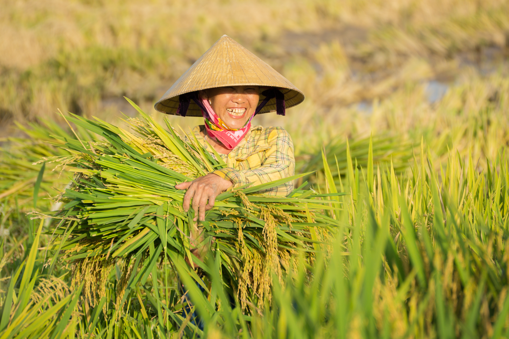
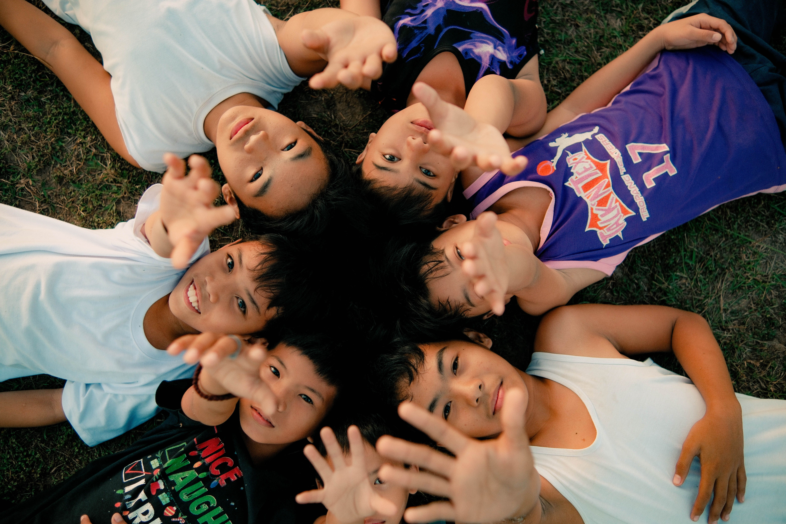

Apat na Henerasyon ng Karanasan at patuloy na nadaragdagan!
Sa loob ng maraming henerasyon, inialay ng pamilyang Toreno ang kanilang buhay sa kanilang simpleng lupain, ginawa itong isang maunlad na sakahan na nakakatulong sa pagpapakain sa mga pamilyang Pilipino. Bilang isang ikatlong henerasyon ng magsasaka ng palay, binalanse ni Roberto Toreno ang kanyang pag-aaral at pagsuporta sa negosyo ng pamilya mula sa edad na anim.
Sa edad na 13, naging aprentis siya sa isang ahente ng palay, at natutunan ang kalakalan sa pamamagitan ng pang-araw-araw na karanasan. Pagkatapos ng hayskul, nagtrabaho siya ng full-time bilang ahente sa Leganes, na naglilingkod sa mga kliyente sa buong lalawigan ng Iloilo. Sa edad na 23, dala ang ipon at tiwala sa kanyang mga kasanayan, itinatag niya ang sarili niyang istasyon ng pagbili ng palay.
Habang lumalago ang kanyang negosyo, lumawak si Roberto sa industriya ng bigasan sa pamamagitan ng pagbubukas ng isang tingian at pakyawan na tindahan ng bigas. Ginagabayan ng kanyang paniniwala na “Kung gutom ang mga manguguma, gutom man ang mga tawo” (“Kung nagugutom ang mga magsasaka, nagugutom din ang mga tao”), nanatili siyang nakatuon sa pagsuporta sa mga magsasaka at pagbabalik sa kanyang bansa sa pamamagitan ng kanyang trabaho.

"Ang isang bahay ay kasingtibay lamang ng pundasyon nito."
(Matthew 7:24-27)
Kaya simulan na natin ang pagbuo ng pundasyon!
Ang karaniwang Pilipino ay kumokonsumo ng 3 tasa ng bigas sa isang araw; humigit-kumulang 17.7 bilyong kilo ng bigas bawat taon! Gayunpaman, ang Pilipinas ay nakakagawa lamang ng humigit-kumulang 12 bilyong kilo ng bigas bawat taon. Dahil hindi natin kayang matugunan ang pangangailangan sa loob ng bansa, kailangan nating umasa sa mga inaangkat na produkto upang matugunan ang ating mga pangangailangan. Sa karaniwan, nag-aangkat tayo ng 3.8 bilyong kilo ng bigas bawat taon, at ang bilang na iyon ay patuloy na tumataas. Inaasahan nating mag-aangkat ng mahigit 5 bilyong kilo sa pagtatapos ng 2026!
Ang pagtaas ng mga inaangkat na bigas ay nakaapekto sa ating ekonomiya. Nahihirapan ang mga magsasaka na magpatuloy sa pagpapatakbo dahil sa mataas na demand para sa mas murang bigas, ngunit nakahanap kami ng paraan upang mapanatiling abot-kaya ang bigas habang binibigyan pa rin ang ating mga magsasaka ng mga mapagkukunang kailangan nila upang umunlad. Kaya naman ang aming pananaw ay bigyan ang ating mga lokal na magsasaka ng pundasyon na mapagtatagumpayan upang ang ating bansa ay muling umunlad.

Itanim ang mga binhi ng ngayon para sa ating mga anak bukas
Hindi lahat ng buto ay nagiging halaman—kaya naman mahalaga ang bawat buto.
Sa kasalukuyan, humigit-kumulang 800,000 batang wala pang limang taong gulang ang dumaranas ng matinding malnutrisyon.
Tulad ng pamilyang Toreno na nagpamana ng kanilang mga pinahahalagahan mula sa isang henerasyon patungo sa isa pa, nananatili silang nakatuon sa pagbuo ng isang kinabukasan kung saan walang Pilipinong magugutom.
Samahan kami sa paglikha ng mas magandang kinabukasan para sa ating mga anak. Ang iyong suporta ay maaaring magdulot ng pangmatagalang epekto sa mga komunidad na kanilang tinuturing na tahanan at makatulong sa pagtatanim ng mga binhi ng isang bukas na walang gutom.
